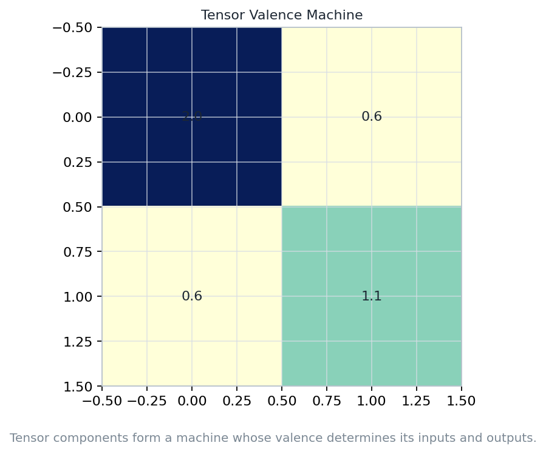
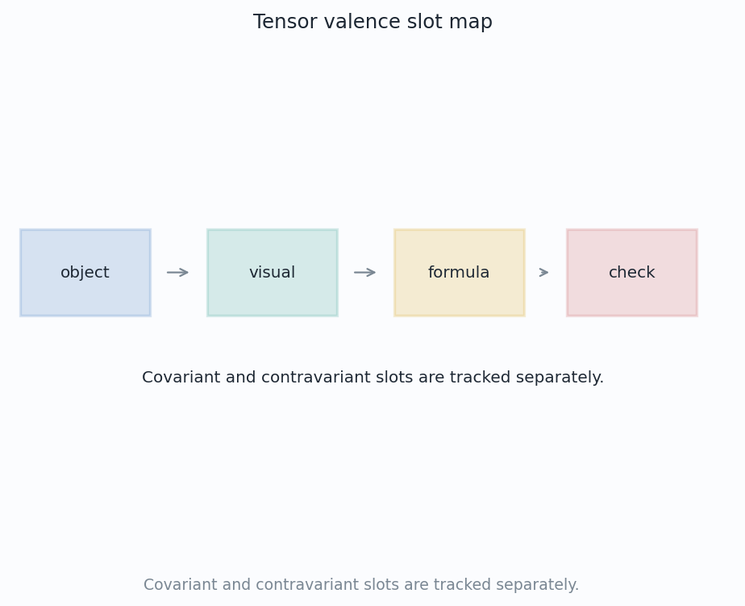
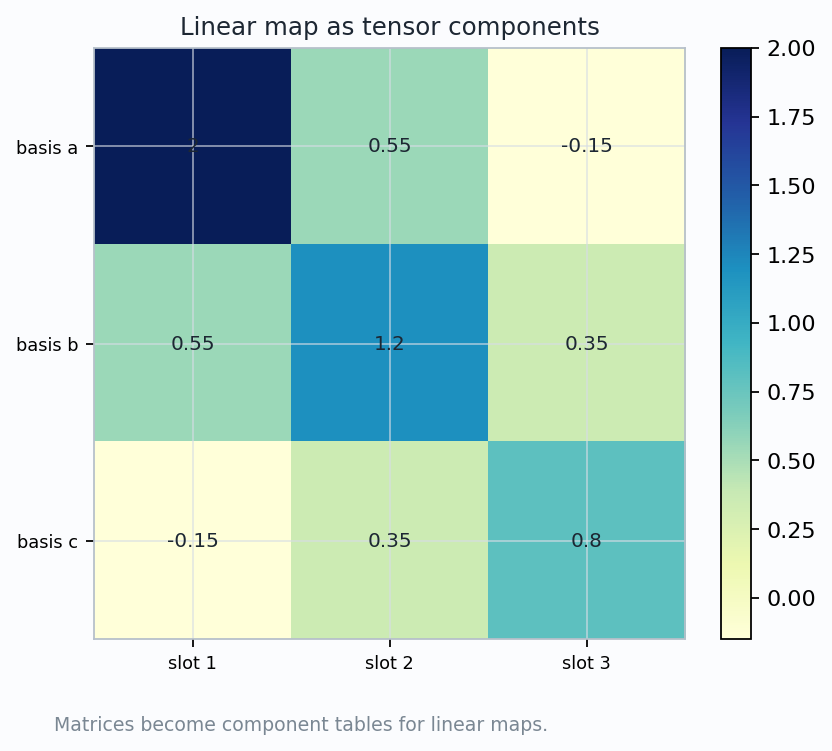
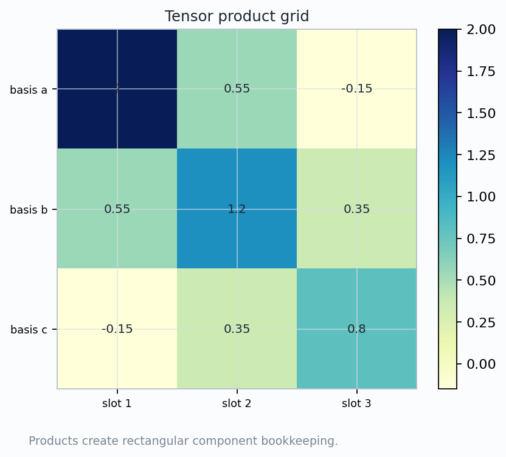
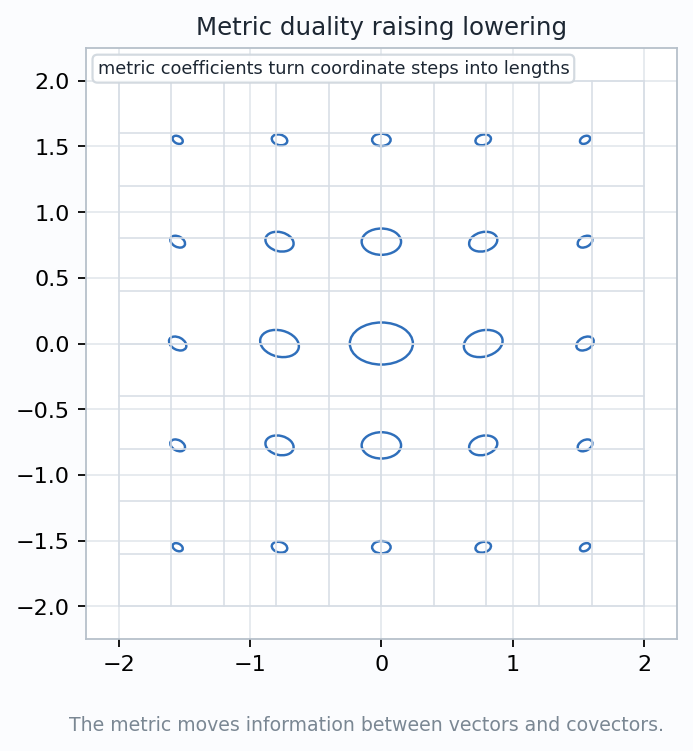

A tensor is a multilinear device with typed input slots. Components are the readings after we choose basis probes.
$$T:(V^*)^r\times V^s\longrightarrow \mathbb{R}$$
A type \((r,s)\) tensor eats \(r\) covectors and \(s\) vectors.
Each slot is linear while the other slots are held fixed. The tensor records a measurement rule, not a pile of unrelated numbers.
Before writing indices, ask: what inputs go into the slots, and what measurement should survive a coordinate change?

$$T(\alpha^1,\ldots,\alpha^r;\;v_1,\ldots,v_s)$$
Covectors and vectors occupy different kinds of slots. Mixing the slots changes the object.
Rows and columns are basis choices. The tensor is the rule that would produce a compatible table after any allowed change of basis.
Ask students to identify the slot type before naming the components. This keeps the geometry ahead of the notation.
$$T^{i_1\cdots i_r}{}_{j_1\cdots j_s}$$
Upper indices track covector-input slots. Lower indices track vector-input slots.
\(\alpha(v)\) is a one-form measuring a vector direction. Its components carry lower indices.
A vector pairs with covectors. Its components carry upper indices.
An index is not a decoration. Moving it requires structure, usually a metric, and changes the type of slot being represented.
$$T^{i}{}_{jk}\quad\text{has one upper and two lower slots}$$


$$A=A^{i}{}_{j}\,e_i\otimes \varepsilon^j$$
$$A(v)^i=A^{i}{}_{j}v^j$$
The lower slot reads the input vector. The upper slot records the output vector direction.
The matrix entries change when the frame changes. The linear map, as an operation on vectors, remains the same.
Students already know matrices. Tensors generalize the same idea to many slots and geometric input types.
$$(\alpha\otimes\beta)(u,v)=\alpha(u)\,\beta(v)$$
\(\alpha\) has one vector slot and \(\beta\) has one vector slot.
\(\alpha\otimes\beta\) has two ordered vector slots.
The product expands the ledger. Contraction is a separate operation.
$$(S\otimes T)^{ab}{}_{ijk}=S^{a}{}_{ij}\,T^{b}{}_{k}$$
Read the product left to right as slot concatenation. The visual grid is the bookkeeping shadow of that concatenation.

$$\operatorname{tr}(A)=A^{i}{}_{i}$$
$$(CT)^{ik}{}_{l}=T^{ijk}{}_{jl}$$
A repeated upper-lower index means "pair and sum".
The paired slots transform in opposite ways, so the basis change cancels inside the summation.
Contraction turns a multilinear measurement into a simpler measurement by internally testing one matching pair of slots.

$$g(v,w)=g_{ij}v^i w^j,\qquad ds^2=g_{ij}dx^i dx^j$$
$$v^\flat=g(v,\cdot)=g_{ij}v^i dx^j$$
$$\alpha^\sharp=g^{ij}\alpha_j\,\partial_i$$
The components move between upper and lower positions because the metric supplies a translator between vectors and covectors.
The geometric vector or covector being represented is not replaced by a table; the table is a coordinate reading of it.
$$S(u,v)=S(v,u)$$
The measurement ignores the order of matching slots.
$$\omega(u,v)=-\omega(v,u)$$
Swapping the directed inputs reverses the sign.
Differential forms are antisymmetric covariant tensors. Repeated directions force the measurement to vanish.
$$dx\wedge dy(u,v)=u^xv^y-u^yv^x$$
$$\widetilde{T}_{ab}=\frac{\partial x^i}{\partial \widetilde{x}^a}\frac{\partial x^j}{\partial \widetilde{x}^b}T_{ij}$$
$$T(u,v)=T_{ij}u^i v^j=\widetilde{T}_{ab}\widetilde{u}^{a}\widetilde{v}^{b}$$
The table, basis vectors, and coordinate components can all change. The multilinear reading stays fixed.
If a computed number changes under a pure coordinate relabeling, the slot transformation has been mishandled.
multilinear measurement rule, not just an array of numbers
typed inputs: vector slots and covector slots transform differently
tensor product adds slots; contraction removes matched slots
component tables change, but the measurement survives relabeling
Five concept-named visuals are recorded in the chapter 33 artifact subtree.
The saved JSON checks assert nonblank visuals and matching inspection targets.
The wedge determinant sample is nonzero, so orientation-sensitive forms are represented.
tensors are typed, multilinear
measurement machines
Coordinates label the readings. Slots define the geometric object.